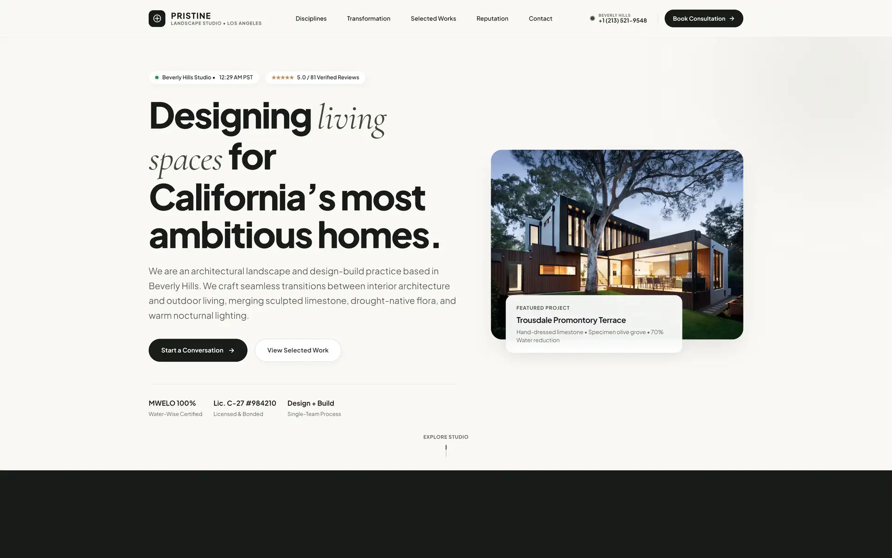

Pristine Landscape Studio
A bespoke digital presence for a Beverly Hills architectural practice. The rebuild translates physical craftsmanship—sculpted limestone, native flora, and nocturnal lighting—into a quiet, high-contrast editorial experience optimized for high-resolution imagery and sub-second loading.
View Live Project